Project 2: Local Feature Matching
For this project I demonstrated feature matching through a set of feature interest points that was discovered by a Harris Edge Detector. I was able to compare accuracies between using just feature matching, using SIFT with feature matching, and combining the Harris edge detector. Furthermore I was also able to determine changes in accuracy by using larger SIFT windows, different Harris windows, different Gaussians, and different alpha values when computing Harris Values.
- Get Features/Match Features
- Harris Detector
- Conclusion & Extra Credit
Get Features/ Match Features
I started out by using cheat_interest_points() to code out my SIFT and my_match_features() algorithm. For the SIFT method I essentially iterated through all the pairs of (x,y) interest points and found 16x16 windows that centered these interest points. Subsequentily, I broke each of these windows down to 4x4 blocks and sorted these pixels based on direction using the gradients of the image. These directions are then sorted into a histogram bin by their respective magnitudes. Ultimately, after appending all the 4x4 histogram arrays together we are left with a size (k, 128) array where k is the number of features. 128 is (16/4)^2 * 8 where 16 is the size of the window around the interest points, 4 is the 4x4 matrix
Next I implemented match_features(). Which is essentially a double for loop where I am comparing the distance between the normalized array of one feature to another. Ultimately, the 2 arrays that have the smallest distance are matched and a confidence interval is determined using the nearest neighbor ratio. Finally, all matched elements are sorted my highest confidence.
Harris Detector
For the Harris Detector, I first computed gradient x and gradient y of the image using np.gradient(). Next I implemented the following equations with a Gaussian with the cutoff frequency of 12 and an alpha of .4. My window size I used for Harris was originally 40 with a slide of 10 which was not enough and did not give me a good accuracy. By decreasing the window size to 30 and decreasing the slide to 8, I was able to get much more interest points which increased my top 100 matches' accuracy from 78% to 86% on my final result.
After implementing the Harris Detector, I was able to visualize the following image:
The key takeaway from this image was that a lot of the features were very clumped together especially around the center. To fix this, I implemented Adaptive Non-Maximal supression which evens out the features a bit more by taking in acount distance from the previous interest point and then performing a sort. The visualization image I got after implementing Adaptive Non-Maxmimal supression is the following:
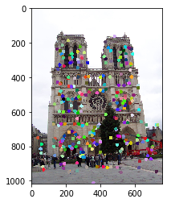Because each interest point was scaled by their distance preceding the previous interest point, the interest points in this picture are much more spaced out.
Conclusion & Extra Credit
The final results using Harris edge points, ANMS, SIFT and feature matching are demonstrated below. The final accuracy achieved was 86% for Notre Dame, 65% for Mount Rushmore, and 10% for Episcopal Gaudi. This was a huge improvement from using just the cheat interest points. To get the 86% accuracy for Notre Dame, I had to fine tune the Gaussian size because it was too large when I first started. I also had to increase n from 1500 to 1800 to get more interest points from the Harris edge detector. Using the interest points, only a 66% accuracy was found for Notre Dame, a 40% for Mount Rushmore, however Episocopal Gaudi was slightly increased to 17%. I think the Episcopal Gaudi decreased in accuracy mainly because Harris Edge detection is poor for finding edges with pictures of different scaling. So when n was increased to 1500 rather than just using the 100 cheat interest points, accuracy decreased during the feature matching process.
Final Results
| 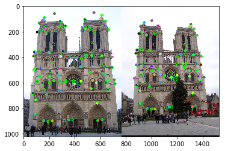 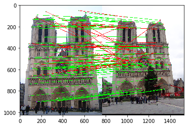 |
| 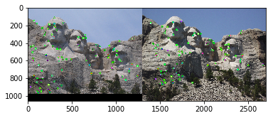 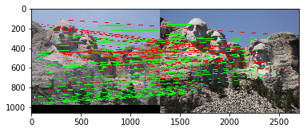 |
| 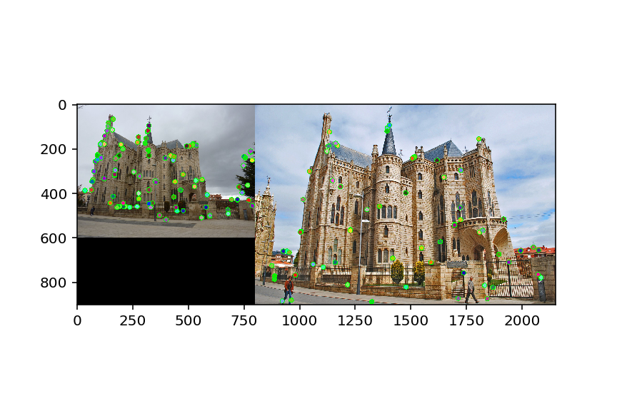 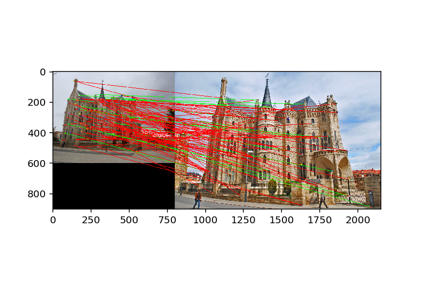 |
For Extra Credit I demonstrated the SIFT algorithm with multiple window widths. As a control, I used cheat interest points to see how much accuracy can be improved with no Harris edge detection and AMNS. I tested window feature sizes of 16, 28, 36, and 40. The accuracy results were
| 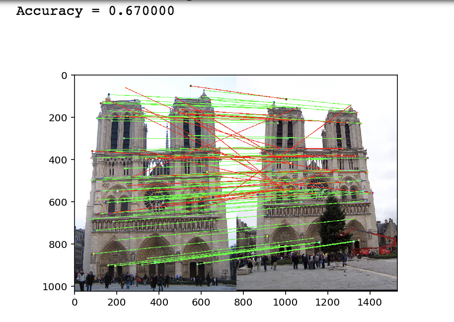 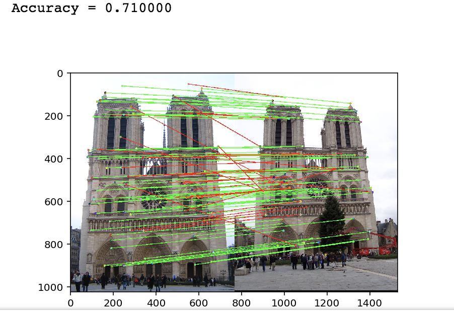 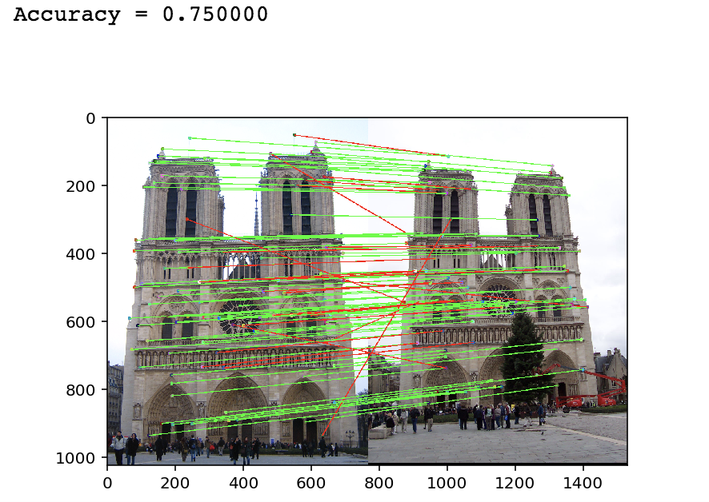 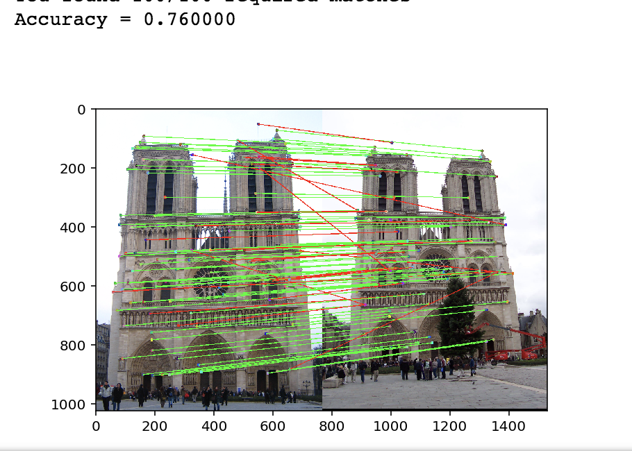 |
| 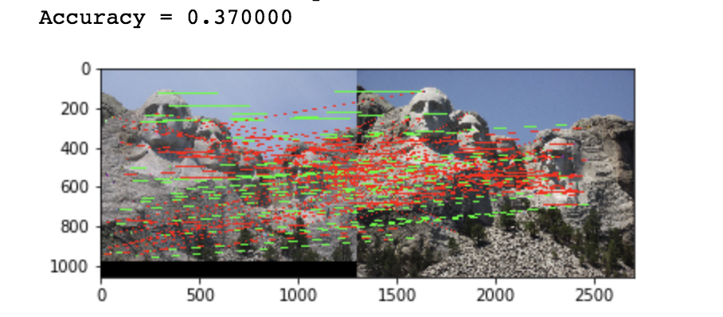 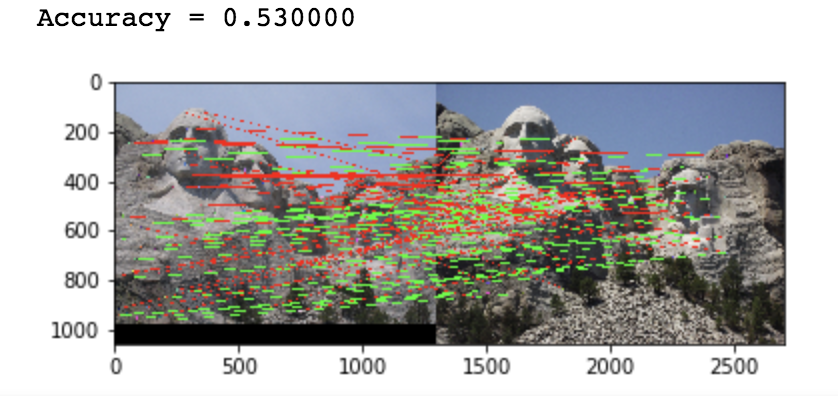 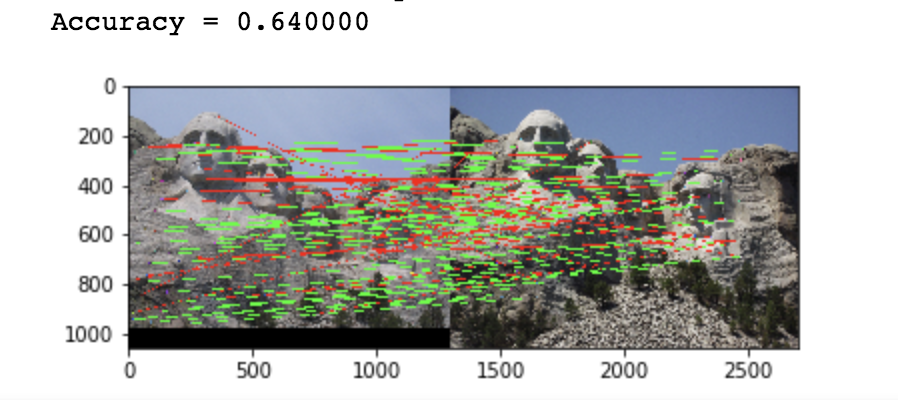 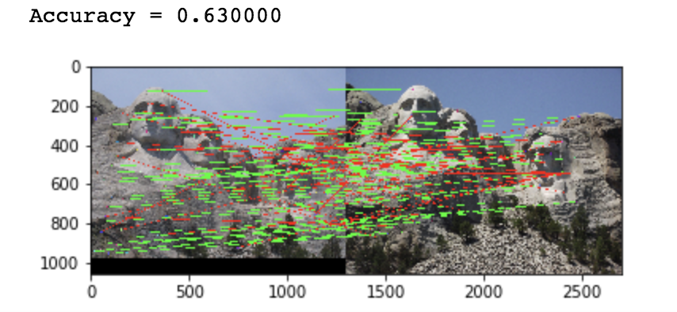 |